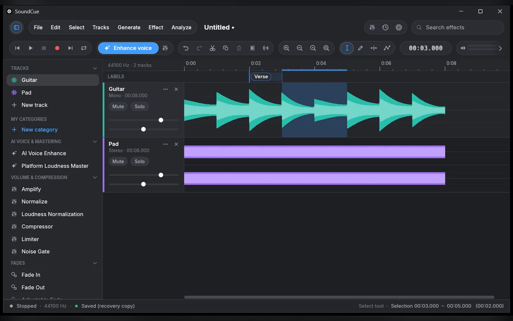
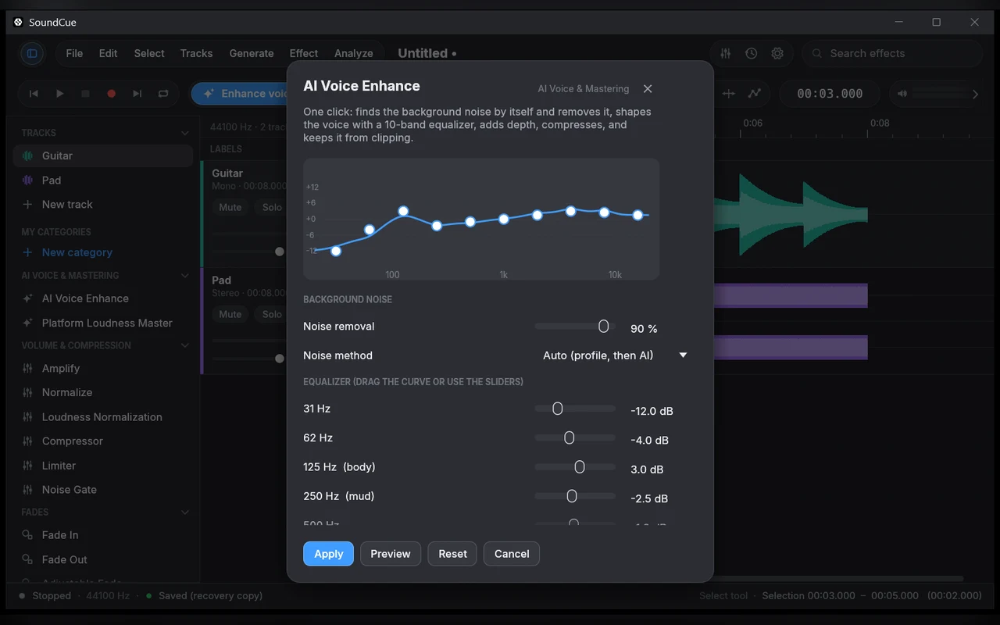
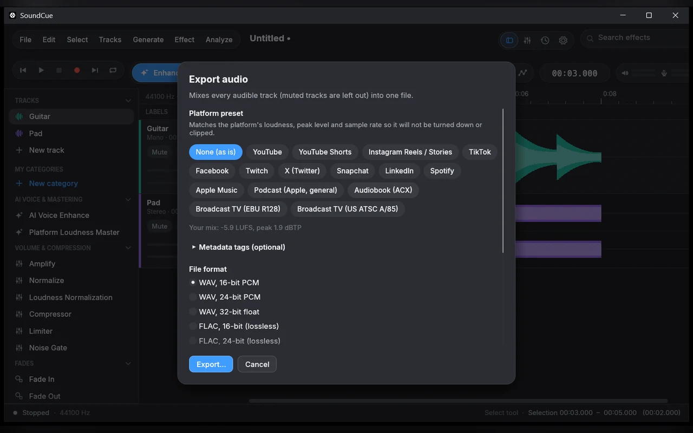
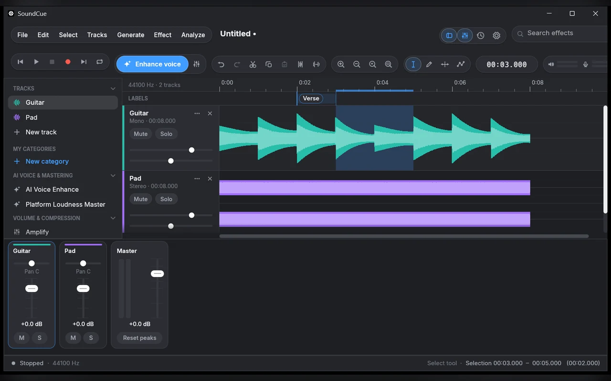
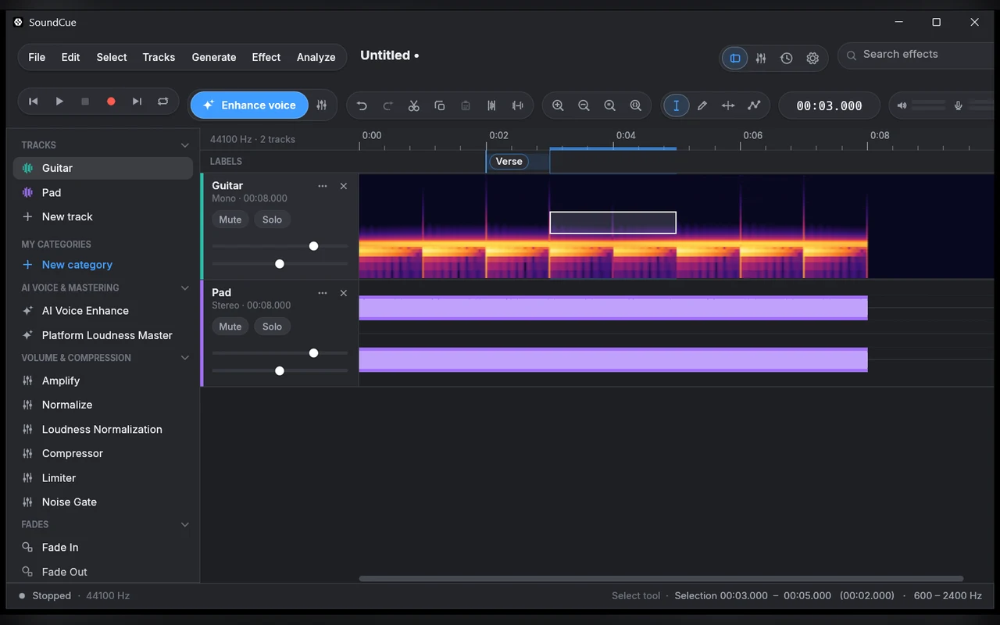

A fast multitrack audio editor written in Rust. Record, edit and mix audio with one-click AI voice enhancement and ready-made export presets for YouTube, Instagram, TikTok and more.
Windows 10 and 11, iPad and iPhone · Free, no ads, no tracking

Two tracks, a pill toolbar and a sidebar of effects. Everything in one window.

Press Enhance voice and tune every stage. One-click AI Voice Enhance.

Pick a platform and the loudness is set for you. Presets for every platform.

Faders, pan, mute, solo and a master meter. A real mixer board.
Record, edit, mix and export.
Press Enhance voice.
SoundCue finds the background noise from the quietest speech-free stretch of your clip, shapes the voice with a draggable 10-band equalizer, adds warmth and depth, de-esses, compresses and finishes with a limiter and true-peak safety.
Pick a platform.
SoundCue sets the loudness (LUFS), true-peak ceiling and sample rate for you. The dialog shows each platform's rules and what your mix measures now.
Spectrogram view.
Drag a box over time and frequency, then delete or keep that band.

Mixer board.
Faders, pan, mute and solo for each track, with a master meter.
Bring in what you have.
Save it the way you need.
No ads and no tracking.
Release notes for SoundCue.
noise_eval example and scripts/make_eval_speech.sh).No. Settings are kept in your user folder and loaded field by field, so new versions add options without resetting yours.
Yes. Every command can have a key, and you can rebind them in Settings.
12 dark themes, a light theme and 16 accent colours. Text size and animations are adjustable.